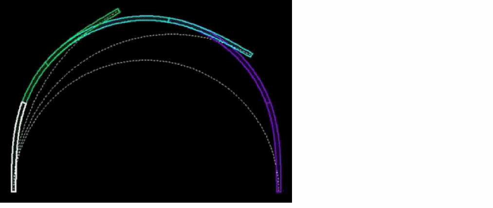

ccBendConnector
ccBendConnector(
l_port
n_radius
n_bangle
n_rmin
n_gamma
)
=> l_connector / nil
Description
(Virtuoso Photonics Option) Creates a bend connector making a circular turn from the specified starting port with the radius, bend angle, and gamma fraction given in ccWaypointConnector. The connector consists of a central circular arc and two apex clothoids matching its curvature at one end and with zero curvature at the other end. Gamma is the ratio of the circular bend angle to the total bend angle.
If the bend radius is specified as 0, the bend connector is created with the radius at the interface between the clothoids and the central circular arc equal to rmin. If you set gamma to 1-(cangle/bangle) bend connectors are created containing fixed clothoid sections with angle varying from 0 to cangle and radius varying from 0 to rmin.

Constraints
-
0 < |bangle| < 2*PI -
0 <= gamma <= 1 -
gamma = 0 or gamma = 1 when bangle > PI
Arguments
|
l_port
|
list(nil 'xy l_point 'facet l_facet) | nil
The starting port.
where,
-
l_point
list(n_x n_y)
A list of two-dimensional point represented by n_x and n_y. -
l_facet
list(nil 'angle n_angle ['radius n_radius] ['width n_width]
A facet is specified by the angle n_angle. Values for n_radius and n_width are not required and are ignored if specified.
|
|
n_radius
|
Radius of the turn made by the bend.
|
|
n_bangle
|
Angle of the turn made by the bend.
Valid values: Greater than 0 and less than the product of 2 and Pi.
|
|
n_rmin
|
Minimum allowed curvature radius.
|
|
n_gamma
|
A numeric value between 0 and 1 indicating the ratio of the circular bending angle to the overall bending angle.
-
When the value is
1, the connector consists of a single circular arc. -
When the value is
0, the connector consists of two clothoids.
|
Value Returned
|
l_connector
|
list(nil 'connector o_polyCurve 'message t_message)
The resulting connector (ccPolyCurve ID) bundled with debug or error information.
where,
-
o_polyCurve specifies the resulting ccPolyCurve connector. If o_polyCurve =
nil, the connector cannot be implemented. -
t_message is a string holding the debug information or an error message describing the reason why the connector calculation was not successfully completed.
|
|
nil
|
An error occurred, the connector cannot be implemented.
|
Example
port = '(nil xy (3000 250) facet (nil angle 20))
radius = 100
bangle = -300
rmin = 0.1
gamma = 1
ccBendConnector(port radius bangle rmin gamma)
=> (nil connector cc@0x293deeb9 message "Length=523.598776 MinRadius=100.000000")
Related Topics
ccWaypointConnector
Curvy Core Connector Functions
Return to top